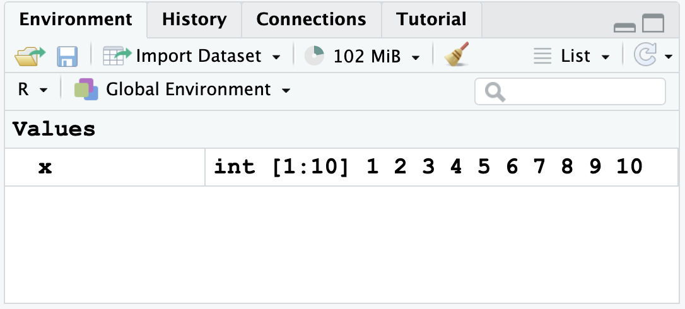
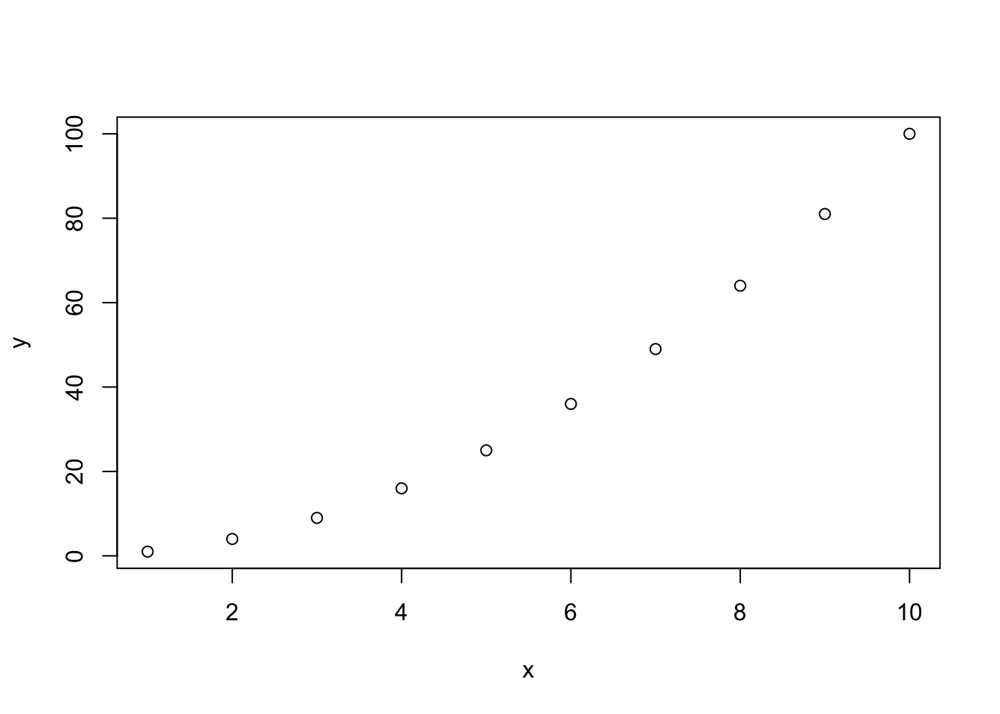
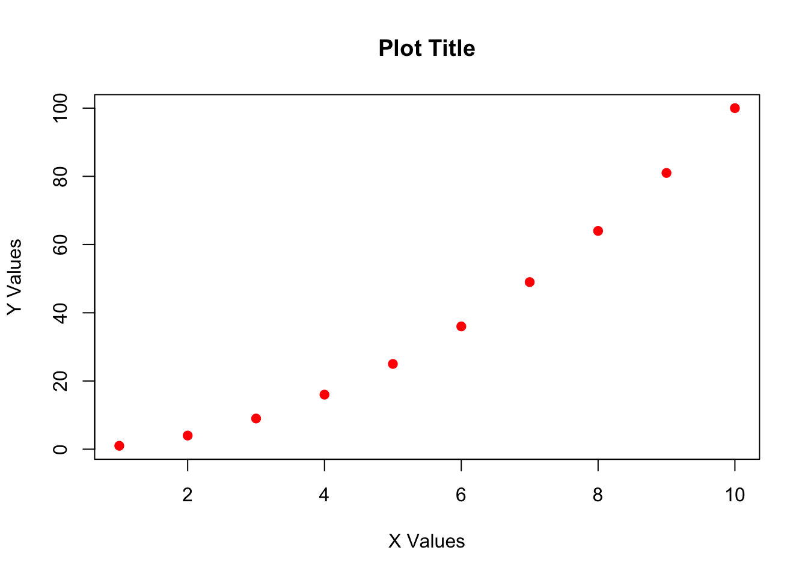

x <- 1:102 Intro to R
Now that we have installed RStudio, we will need to create an RMarkdown document that we can use for answering questions and turning in assignments. These documents will also be used for appendices and other materials in future publications you create - RStudio can easily knit documents into .pdf, .docx (i.e., “Word” documents), and .html. In this class, we will use almost exclusively .html documents, as these are the most compatible with Canvas.
- Quick note: Mac keyboards differ from Windows keyboards in that they have more keys; as such, shortcuts will differ!
For both operating systems, I will list keys that have to be pushed together with a “+” between them. (If you need to push the “+” key, I will offset it like
+so; for example, pushing CONTROL and PLUS on Windows at the same time makes a window’s font bigger; I would write this asCTRL++).If you need to hit a single key that differs between operating systems, I will always list the Windows/Linux key first and the Mac key second; for example,
Enter/returnfor inserting a new line.
2.0.0.1 Windows/Linux keys
CTRL: ControlALT: Alt
2.0.0.2 Mac keys
⌘: Command
⌥: Option
^: Control
2.1 Creating an RMarkdown document
2.1.1 Setup
2.1.1.1 Creating a new document
In this class, we will be creating documents in what is called RMarkdown. This is a rich-text version of R that allows us to create documents with the code embedded. In RStudio, click the “+” button in the far top left to open the New Document menu. Scroll down this list and click on R Markdown.
A screen like this will appear:
After entering a title and your name and selecting document in the left hand menu, click OK.
2.1.1.2 Document setup
In the image above, we can see what a “default” RMarkdown script looks like after creating the file. At the top of the document, between all of the dashes, we have the yaml header that tells R what kind of document will be created, who the author is, and what the date is for the document (by default, this is 2025-07-17, which just prints the data on which the code was run). In this class, we will be saving documents as html as they are the easiest documents to create and save. These documents will include all of your code, text, and even any plots you may create!
The first thing you should do is save your document. Since this is a “first go”, feel free to save it as
test.rmdor something to that effect, but save the document in the folder you want to use for assignments!After the document is saved, you can hit the
knitbutton at the top of the screen and see what happens. It should create a document in the same location as your saved file that is anhtmlformat.A new document will appear in a pop up window as well. The information in this document will be the default text loaded above.
After running the document once, delete all text below the
---at the bottom of theyamlheader so we can create our own document.
2.1.1.3 Writing text
Plain text in your RStudio window will be rendered as plain text in the final document. (i.e., whatever you type normally will become “normal text” in the finished document).
Important shortcut: An important shortcut is the “double click”. Write a word, any word (like
potato) in your document. If you double click, it will select the whole word. If you have a word or sentence selected, you can hit",(,[,{, or*and RStudio will automatically put the closing equivalent of the symbol at the end of your selection.Headers: Lines preceded with
#will become headers; the number of#determines the level of the header, with#being main headers,##being a second level header, and###being a third level header, etc.Formatting: Words can be italicized by putting an asterisk on each side of the word (
*italic*) and bold by putting two asterisks on each side (**bold**).Hyperlinks: URLs are also supported, with
<>on each side of a URL making it clickable. To turn a word into a hyperlink, type[words to show](https://target_URL.com). It is important that the words are in brackets and the URL is in parentheses, or it will not format correctly.
2.1.2 Coding
In your computer, you should have erased all information except for the yaml header between the dashes at the top of the document. Make sure to save your file in a folder where you want your assignment to be located. It is important you do this step up front as the computer will sometimes save in random places if you don’t specify a file location at the beginning. Don’t forget to save your work frequently!
2.1.2.1 Code chunks
Code chunks are sections within the document where we can write code and it will be executed. These chunks are always preceded by a series of three “hashes” and the code language specified in brackes (i.e., {r}) and are followed by a set of three hashes as well. In your window, these will appear with a greyed-out background to show that the area is a code chunk.
We will create an example set of text, and then insert a code chunk to see how this works.
2.1.2.2 Test text and chunks
Type
This is a test of the *Rmarkdown* code.as plaintext in your document.Hit
Entertwice.Insert a code chunk by using the correct shortcut:
Windows/Linux:
CTRL+ALT+IMac: ⌘ + ⌥ +
I
Push the down arrow until you are between the sets of hashes in the code chunk.
Type
print("hello world")print: a command that returns astringof characters. A string is any set of characters that should be read together as a single object or line."hello world": placing the letters inside quotes"tells R that these are character data that should be read as astring.The full command should return an output of
"hello world".

After typing this into the document, hit knit near the top of the upper left window. R will now create an HTML document that should look like this:
We can see now that the HTML document has the yaml header at the top of the document for the title of the document, the author’s name, the date on which the code was run. The plain text we used has been printed, and the greyed-out box with color coded R code is followed by the output we expected.
Let’s try something a little more complex. Create a new code chunk and type the following:
NOTE: Mac users can use ⌥ +
-to automatically insert<-, saving a lot of time. Unfortunately, there is no equivalent shortcut for Windows.We are avoiding using
=to create objects as this can lead to issues in saving objects to R’s memory in some cases and can lead to confusion between objects and parts of functions.
x: putting a plain letter, character, or word in R asks it to refer to something in its memory. If it does not exist in its memory, it can be created by using something like<-. When we define a set of characters as numbers or as something else, we are creating anobject.1:10: this will print all whole integers between the listed numbers, inclusive of those numbers. In this case,1:10is the same asc(1,2,3,4,5,6,7,8,9,10), wherecconcatenates and puts together the numbers in a singlestring.Run your code by placing your cursor on the same line as
x <- 1:10and pressingCTRL+Enter/ ⌘ +return.After running, you will see the following appear in your top right window, showing you that
xwas saved:

- Hit
Enter/returnto create a new line within the code chunk. Type the letterxand hitCTRL+Enter/ ⌘ +return. You should see the following:
x [1] 1 2 3 4 5 6 7 8 9 10Create a new object,
y, that is the square ofx, as follows:^: this is the “power” symbol; thus,x^2is \(x^2\),x^3is \(x^3\), etc.Don’t forget to use
CTRL+Enter/ ⌘ +returnto run the line of code.
y <- x^2After running the code, you should have both objects in your memory, like so:
We can now print y, just as we did for x, to see what the object contains in the document:
y [1] 1 4 9 16 25 36 49 64 81 100- Note that you can multiply objects together as well. When we have strings, the strings will be multiplied together. Try the following:
x*y [1] 1 8 27 64 125 216 343 512 729 1000y-x [1] 0 2 6 12 20 30 42 56 72 90- Note: Since I didn’t “store” this value as a variable in R using
<-, the value is not in the environment.
2.1.2.3 Taking notes
We can take notes and annotate code within a code chunk by using the character # before anything we wish to annotate. Note that the color of the text after # inside the code chunk will change to show us that the code will not run.
x [1] 1 2 3 4 5 6 7 8 9 10# yAbove, we can see only x printed, as y was blocked with a #. We can use this to add text inside the code as well:
# subtract x from y
y - x [1] 0 2 6 12 20 30 42 56 72 90You are highly encouraged to add notes to your code, both to help others understand your logic and to remind yourself of what you did in the future!
2.1.3 Plotting
Now, let’s try creating a plot. This is easy in R, as we just use the command plot. At minimum, we must define an x variable and a y variable for the command plot. It will calculate and make everything else automatically.
- Note: Within commands, we must use
=.
Type and run the following:
plot(x = x, y = y)
Now let’s make the plot with some new visual parameters. I describe what these arguments do using # to make notes within the code chunk. Note that you can split commands over multiple lines after typing , but that the command must all be enclosed within parentheses ().
plot(x = x, # specify x values
y = y, # specify y values
ylab = "Y Values", # specify Y label
xlab = "X Values", # specify X label
main = "Plot Title", # specify main title
pch = 19, # adjust point style
col = "red") # make points red
2.2 Stop touching your mouse
RStudio has lots of keyboard shortcuts that will make your life easier. You will be a lot faster if you rely on these shortcuts. I outline some here, but see the Glossary.
Use arrow keys to move around your document
Highlight code by holding
shiftand pushing the arrow keysCopy text using
CTRL+C/ ⌘ +CPaste text using
CTRL+V/ ⌘ +VCut text using
CTRL+X/ ⌘ +XUndo last edit or mistake using
CTRL+Z/ ⌘ +ZSave your document using
CTRL+S/ ⌘ +S
These shortcuts are worth learning; they will greatly increase the speed at which you get things done.
2.2.1 Tab complete
RStudio allows for “tab-completing” while typing code. Tab-completing is a way of typing the first part of a command, variable name, or file name and hitting “tab” to show all options with that spelling. You should use tab completing because it:
- reduces spelling mistakes
- reduces filepath mistakes
- increases the speed at which you code
- provides help with specific functions
2.2.2 Help
At any point in R, you can look up “help” for a specific function by typing ?functionname. Try this on your computer with the following:
?meanNOTE that you cannot knit a document with a help command in it! So you need to remove any lines with them before creating your document or R will be very unhappy.